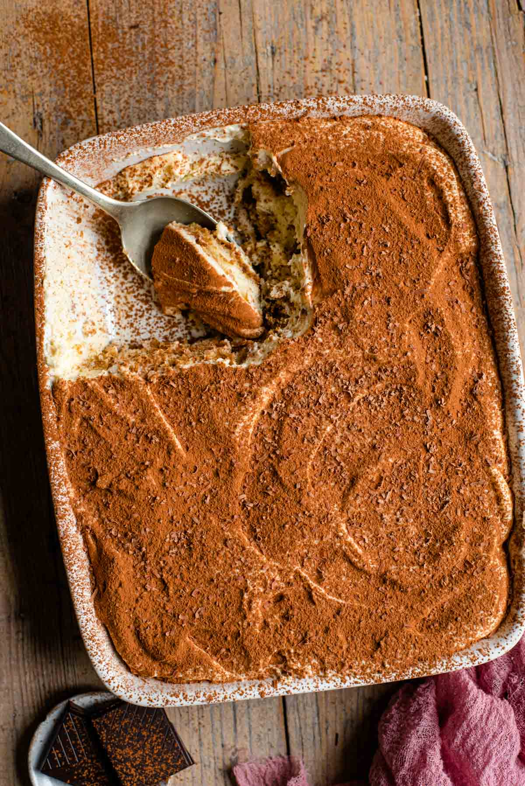

Tiramisu

Description
The easiest and most delicious Tiramisu recipe! This authentic Italian dessert is rich and creamy but as light as air made with coffee dunked Savoiardi (ladyfingers), a smooth and creamy mascarpone filling and dusted with cacao powder to finish it off. Perfect for any occasion!
Ingredients
- 2 cups mascarpone (500g)
- 24 (roughly) Savoiardi biscuits (lady fingers)
- 1 cup strong brewed coffee (230ml)
- 3 tablespoons dark chocolate grated
- 4 egg yolks at room temperature
- 3 egg whites at room temperature
- 6 tablespoons sugar
- 4 tablespoons coffee liqueur (optional)
- 1 tablespoon cocoa powder
Instructions
- Carefully separate the egg yolks and whites into two separate bowls. Add 3 tablespoons of sugar to the egg yolks and whisk them with an electric whisk until pale and thick.
- Clean your beaters thoroughly. This is very important as egg whites will not whip if any egg yolk is added.
- Using a clean electric whisk start to whisk the egg whites. When they become frothy, add 3 tablespoons of sugar and whisk until the egg whites are stiff and glossy. You should be able to turn the bowl upside down and they remain stiff (be careful not to overwhip them).
- Add the mascarpone to the egg yolk mixture and mix together until smooth and creamy.
- Next, add one third of the whisked egg whites to the mascarpone and egg yolk mixture and gently fold it in as you would with a cake batter. Continue with the remaining whites a third at a time until it's completed incorporated.
- Mix the espresso and 4 tablespoon coffee liqueur in a shallow bowl and dip in the lady fingers (savoiardi biscuits). You want to dip them into the liquid quickly (around 2-3 seconds) whilst turning to soak each side.
- Lay the ladyfingers in a glass or ceramic dish until you have one even layer. You can brake some biscuits to fit your dish.
- Next, add half of the mascarpone mixture over the biscuits and spread out in an even layer, top with some grated dark chocolate.
- Continue with another layer of ladyfingers and mascarpone as directed above. Finally, dust with cocoa powder and chill in the fridge for roughly 6-8 hours.